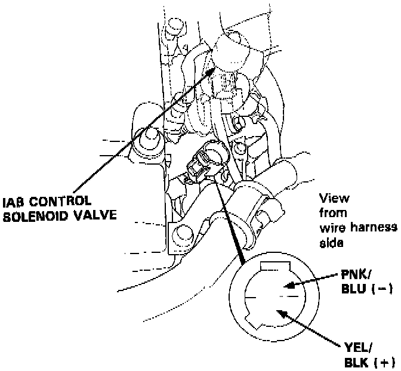

Operation CHARM
: Car repair manuals for everyone.
Home
>>
Acura
>>
1995
>>
Integra (GS-R) L4-1797cc 1.8L DOHC (VTEC)
>>
Repair and Diagnosis
>>
Powertrain Management
>>
Fuel Delivery and Air Induction
>>
Variable Induction System
>>
Variable Induction Control Solenoid
>>
Locations
>>
Component Locations
Component Locations
IAB Solenoid Valve:
